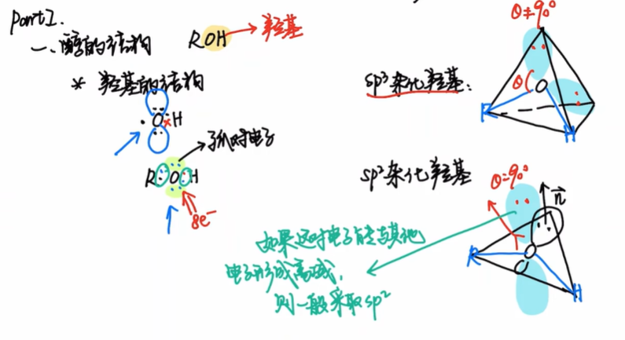
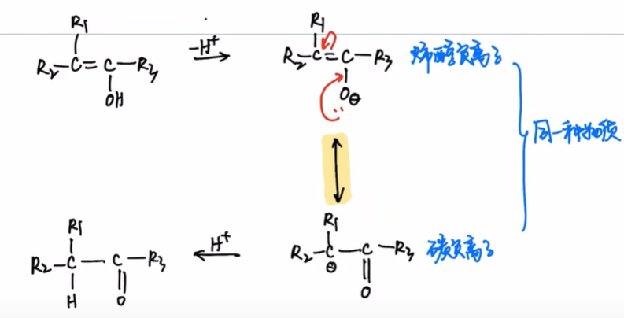
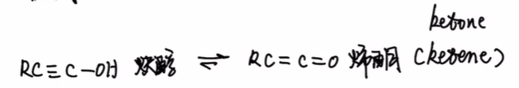
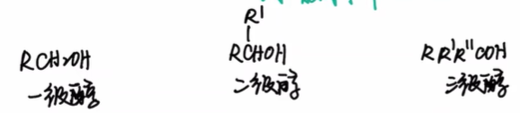
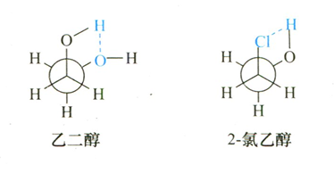
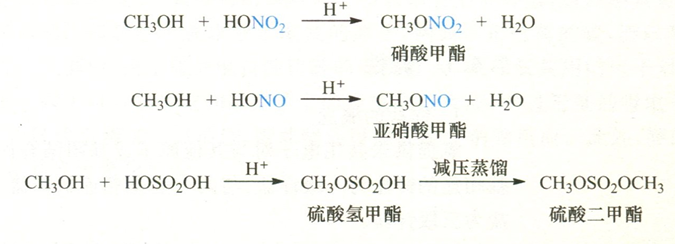
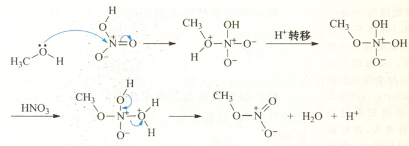

<meta data-alternate="https://freshmark.sunisalex.org/en/posts/chemistry/babychem/basic-properties-of-alcohols/" data-article="true" data-canonical="https://freshmark.sunisalex.org/posts/chemistry/babychem/basic-properties-of-alcohols/" data-description="本文是【基础有机化学 L9-2 醇的基本性质，醇的酸碱性和亲核性，醇与无机酸的反应】 的笔记" data-freshmark-page data-title="基础有机化学 L9-2 — Freshmark"><main><header class="container article-header"><a href="/" class="back-link">← 返回全部文章</a><p class="eyebrow article-subject">化学</p><h1>基础有机化学 L9-2</h1><p class="article-dek">本文是【基础有机化学 L9-2 醇的基本性质，醇的酸碱性和亲核性，醇与无机酸的反应】 的笔记</p><div class="article-meta"><time datetime="2026-07-04">2026年7月4日</time><span>1 分钟阅读</span><span>化学竞赛 · 有机化学</span><span class="view-count" data-article-view-count hidden>本文访问量 <strong data-article-views></strong></span><a href="index.md" download>下载 Markdown</a><button type="button" class="article-share" data-share-article data-share-text="本文是【基础有机化学 L9-2 醇的基本性质，醇的酸碱性和亲核性，醇与无机酸的反应】 的笔记" data-share-title="基础有机化学 L9-2"><span data-share-label>分享文章</span></button><output aria-live="polite" class="visually-hidden" data-share-status role="status"></output></div></header><div class="article-wrap"><aside class="toc"><div class="toc-head"><p>本文目录</p><button type="button" class="toc-toggle" aria-expanded="false" aria-label="展开或收起目录" data-toc-toggle><span class="toc-toggle-label">目录</span><span class="toc-toggle-icon" aria-hidden="true"></span></button></div><nav aria-label="目录" class="toc-links" data-toc-links><a href="#parti醇的结构" class="toc-level-1">PartI:醇的结构</a><a href="#苯酚" class="toc-level-3">苯酚</a><a href="#苯酚负离子" class="toc-level-3">苯酚负离子</a><a href="#炔醇-烯酮" class="toc-level-3">炔醇-烯酮</a><a href="#物理性质" class="toc-level-2">物理性质</a><a href="#立体化学" class="toc-level-2">立体化学</a><a href="#partii醇的酸碱性" class="toc-level-1">PartII:醇的酸碱性</a><a href="#酸性" class="toc-level-2">酸性</a><a href="#常见醇盐及其用途" class="toc-level-3">常见醇盐及其用途</a><a href="#碱性亲核性" class="toc-level-2">碱性/亲核性</a><a href="#综合判断" class="toc-level-2">综合判断</a></nav></aside><article class="prose"><p>本文是<a href="https://www.bilibili.com/video/BV1D3411q7gW/?share_source=copy_web&amp;vd_source=8df86ec0f66b0d7c70b7414a1a60bc6a">【基础有机化学 L9-2 醇的基本性质，醇的酸碱性和亲核性，醇与无机酸的反应】</a> 的笔记</p><!--more--><h1 id="parti醇的结构">PartI:醇的结构</h1><p>根据八隅体规则,醇的结构为<span class="math-expression math-inline" data-math-source="R-O-H"></span>,其中O原子上有两对孤对电子.</p><p><picture class="responsive-picture"><source srcset="image.freshmark-a92b7acd8fa7-480w.avif 480w, image.freshmark-a92b7acd8fa7-795w.avif 795w" type="image/avif"><source srcset="image.freshmark-a92b7acd8fa7-480w.webp 480w, image.freshmark-a92b7acd8fa7-795w.webp 795w" type="image/webp"></picture></p><p>受<strong>电子效应</strong>和<strong>空间位阻效应</strong>的影响,醇羟基氧的杂化方式可以为<span class="math-expression math-inline" data-math-source="sp^3/sp^2"></span></p><h3 id="苯酚">苯酚</h3><p>在苯酚中,O原子采取<span class="math-expression math-inline" data-math-source="sp^2"></span>杂化,这样O的孤对电子可以与苯环形成共轭,造成电子离域,体系能量下降.</p><h3 id="苯酚负离子">苯酚负离子</h3><p>在烯醇负离子中,羟基氧同样因为<span class="math-expression math-inline" data-math-source="p-\pi"></span>共轭而采取<span class="math-expression math-inline" data-math-source="sp^2"></span>杂化.</p><p><picture class="responsive-picture"><source srcset="image-3.freshmark-6767101be2fe-480w.avif 480w, image-3.freshmark-6767101be2fe-793w.avif 793w" type="image/avif"><source srcset="image-3.freshmark-6767101be2fe-480w.webp 480w, image-3.freshmark-6767101be2fe-793w.webp 793w" type="image/webp"></picture></p><h3 id="炔醇-烯酮">炔醇-烯酮</h3><p><picture class="responsive-picture"><source srcset="image-2.freshmark-d7ca01dbf571-480w.avif 480w, image-2.freshmark-d7ca01dbf571-651w.avif 651w" type="image/avif"><source srcset="image-2.freshmark-d7ca01dbf571-480w.webp 480w, image-2.freshmark-d7ca01dbf571-651w.webp 651w" type="image/webp"></picture></p><p>根据<span class="math-expression math-inline" data-math-source="\alpha-C"></span>分类,醇可以分为一/二/三级醇.</p><p><picture class="responsive-picture"><source srcset="image-1.freshmark-111d0067095f-480w.avif 480w, image-1.freshmark-111d0067095f-578w.avif 578w" type="image/avif"><source srcset="image-1.freshmark-111d0067095f-480w.webp 480w, image-1.freshmark-111d0067095f-578w.webp 578w" type="image/webp"></picture></p><h2 id="物理性质">物理性质</h2><ol><li>低级醇易溶,中级醇部分溶,高级醇不溶</li><li>同碳数,叉链醇的沸点低</li><li>低级醇的熔沸点比同碳数的烃更高</li></ol><h2 id="立体化学">立体化学</h2><p>对于乙二醇和2-氯乙醇,由于邻交叉式构象可以形成分子内氢键,降低构象能量,故主要以<strong>邻交叉式构象</strong>存在</p><p><picture class="responsive-picture"><source srcset="image-4.freshmark-afc90f63197e-374w.avif 374w" type="image/avif"><source srcset="image-4.freshmark-afc90f63197e-374w.webp 374w" type="image/webp"></picture></p><h1 id="partii醇的酸碱性">PartII:醇的酸碱性</h1><h2 id="酸性">酸性</h2><p>共轭碱越稳定,酸性越强.</p><p>根据醇分子的酸碱性顺序,可以得知基团的电子效应.</p><ul><li>在液相中,烷基体现为给电子效应,不利于烷氧基负离子电荷分散. 这是由于烷基空阻大,影不利于烷氧基负离子的溶剂化.</li><li>在气相中,烷基体现为吸电子效应.</li></ul><p><picture class="responsive-picture"><source srcset="image-5.freshmark-7b4fbd921adb-480w.avif 480w, image-5.freshmark-7b4fbd921adb-752w.avif 752w" type="image/avif"><source srcset="image-5.freshmark-7b4fbd921adb-480w.webp 480w, image-5.freshmark-7b4fbd921adb-752w.webp 752w" type="image/webp"></picture>\</p><p>由于有机反应大多在液相中进行,所以一般认为<strong>烷基是给电子基团</strong>.</p><p><span class="math-expression math-display" data-math-source="\boxed{\text{醇+活泼金属(K,Na,Mg,Al)}\rightarrow\text{醇盐}+\ce{H2 ^}}" data-math-display></span></p><h3 id="常见醇盐及其用途">常见醇盐及其用途</h3><ul><li><span class="math-expression math-inline" data-math-source="\ce{EtONa}"></span>:作为小位阻强碱,作为强亲核试剂</li><li><span class="math-expression math-inline" data-math-source="\ce{BuOK}"></span>:作为大位阻强碱,作为弱亲核试剂</li></ul><blockquote><p>本节由 Claude（Anthropic 开发的 AI 模型）补充，附在作者解答之后，并非原作者所写。</p></blockquote><p><strong>更正（Claude 补充）</strong> 这里应写作 <span class="math-expression math-inline" data-math-source="t"></span>-<span class="math-expression math-inline" data-math-source="\ce{BuOK}"></span>（叔丁醇钾，<span class="math-expression math-inline" data-math-source="\ce{(CH3)3COK}"></span>）。正丁醇钾 <span class="math-expression math-inline" data-math-source="n"></span>-<span class="math-expression math-inline" data-math-source="\ce{BuOK}"></span>&#32;位阻并不大，起不到&quot;大位阻碱&quot;的作用；给出 Hofmann 产物的正是叔丁醇钾。</p><p>进行卤代烃的β-消除反应时,大位阻强碱给出<strong>反Zaitsev产物</strong>,小位阻较弱碱给出<strong>Zaitsev产物</strong></p><p><picture class="responsive-picture"><source srcset="image-6.freshmark-fe3dcfc8be83-480w.avif 480w, image-6.freshmark-fe3dcfc8be83-960w.avif 960w, image-6.freshmark-fe3dcfc8be83-1124w.avif 1124w" type="image/avif"><source srcset="image-6.freshmark-fe3dcfc8be83-480w.webp 480w, image-6.freshmark-fe3dcfc8be83-960w.webp 960w, image-6.freshmark-fe3dcfc8be83-1124w.webp 1124w" type="image/webp"></picture></p><blockquote><p>这是因为碱的体积和强度增大后，空间位阻较大的 β-H 不易受到进攻，而空阻小、酸性强的 β-H 更易反应。</p></blockquote><p>异丙醇铝可以作为氧化还原反应的催化剂.</p><h2 id="碱性亲核性">碱性/亲核性</h2><p>醇羟基的氧原子上的孤对电子如果结合<span class="math-expression math-inline" data-math-source="\ce{H+}"></span>,则体现<strong>碱性</strong>.如果结合亲电试剂<span class="math-expression math-inline" data-math-source="\ce{E^+}"></span>,则体现<strong>亲核性</strong></p><p>同样由于<strong>液相溶剂化不利</strong>的原因,烷基的空阻会增强醇的共轭酸的酸性,也就是减弱醇的碱性.</p><p>醇可以与含氧无机酸(oxo inorganic acid)反应,失去一分子水,生成无机酸酯.</p><p><picture class="responsive-picture"><source srcset="image-8.freshmark-df99f594ad4a-480w.avif 480w, image-8.freshmark-df99f594ad4a-675w.avif 675w" type="image/avif"><source srcset="image-8.freshmark-df99f594ad4a-480w.webp 480w, image-8.freshmark-df99f594ad4a-675w.webp 675w" type="image/webp"></picture></p><p>以醇和硝酸反应为例:反应遵循<strong>加成-消去机理</strong></p><p><picture class="responsive-picture"><source srcset="image-9.freshmark-2287291d8170-480w.avif 480w, image-9.freshmark-2287291d8170-690w.avif 690w" type="image/avif"><source srcset="image-9.freshmark-2287291d8170-480w.webp 480w, image-9.freshmark-2287291d8170-690w.webp 690w" type="image/webp"></picture></p><h2 id="综合判断">综合判断</h2><p><picture class="responsive-picture"><source srcset="image-10.freshmark-b764f966bf24-480w.avif 480w, image-10.freshmark-b764f966bf24-807w.avif 807w" type="image/avif"><source srcset="image-10.freshmark-b764f966bf24-480w.webp 480w, image-10.freshmark-b764f966bf24-807w.webp 807w" type="image/webp"></picture>7-7</p><p>(i)2,3,1,4</p><p>(ii)7,4,5,1,2,3,6,8</p><p>7-8 2,1,6,4,5,3</p></article></div><section class="container comments" data-comments data-comments-path="/posts/chemistry/babychem/basic-properties-of-alcohols/"><div class="comments-head"><div><p class="eyebrow">评论</p><h2 data-comments-title>评论</h2></div><p>登录后参与讨论。注册时只需验证一次邮箱。</p></div><div class="comment-list" aria-live="polite" data-comment-list><p class="comment-state" data-comment-state>正在加载评论…</p></div><button type="button" class="comment-more" data-comments-more hidden>加载更早的评论</button><div class="comment-auth" data-comment-auth><p class="comment-auth-status" data-auth-loading>正在检查登录状态…</p><div hidden data-auth-guest><form class="comment-auth-form" data-auth-login><h3>登录后评论</h3><label>邮箱<input autocomplete="email" name="email" maxlength="254" required type="email"></label><label>密码<input autocomplete="current-password" name="password" maxlength="128" required type="password"></label><div class="comment-form-foot"><p class="comment-form-status" role="status" data-auth-login-status></p><button type="submit">登录</button></div></form><details class="comment-register"><summary>还没有账号？注册</summary><form class="comment-auth-form" data-auth-register><label>昵称<input autocomplete="name" name="name" maxlength="40" required></label><label>邮箱<input autocomplete="email" name="email" maxlength="254" required type="email"></label><label>密码<input autocomplete="new-password" name="password" maxlength="128" required type="password" minlength="8"></label><p class="comment-auth-hint">至少 8 个字符。</p><div class="comment-form-foot"><p class="comment-form-status" role="status" data-auth-register-status></p><button type="submit">注册</button></div></form></details></div><form class="comment-auth-form" hidden data-auth-verify><p>验证码已发送到邮箱，请在 10 分钟内完成注册。</p><label>六位验证码<input autocomplete="one-time-code" name="code" maxlength="6" required minlength="6" inputmode="numeric" pattern="[0-9]{6}"></label><div class="comment-form-foot"><p class="comment-form-status" role="status" data-auth-verify-status></p><button type="submit">完成注册</button></div></form><div class="comment-auth-user" data-auth-user hidden><p>当前登录： <strong data-auth-user-name></strong> <span data-auth-user-email></span></p><button type="button" data-auth-logout>退出登录</button></div></div><form class="comment-form" hidden data-comment-form><label>评论内容<textarea maxlength="2000" minlength="2" name="body" placeholder="写下你的想法…" required rows="5"></textarea></label><p class="comment-markdown-hint">支持 Markdown：加粗、链接、引用、列表和代码。</p><label aria-hidden="true" class="comment-honeypot">Website<input autocomplete="off" name="website" tabindex="-1"></label><div class="comment-form-foot"><p class="comment-form-status" role="status" data-comment-form-status></p><button type="submit" data-comment-submit>发表评论</button></div></form></section></main>